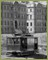
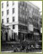
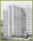

In 1895, the California Legislature appropriated $250,000 for the "Affiliated Colleges" of the University of California, to be located on a 13-acre site overlooking Golden Gate Park.
In the years after the earthquake, San Francisco rebuilt with remarkable speed but the disaster and epidemics that followed reinforced the need for adequate hospitals.
The cross-shaped, fourteen-story teaching hospital was designed by architects Timothy and Milton T. Pflueger.{% include footer.html %}